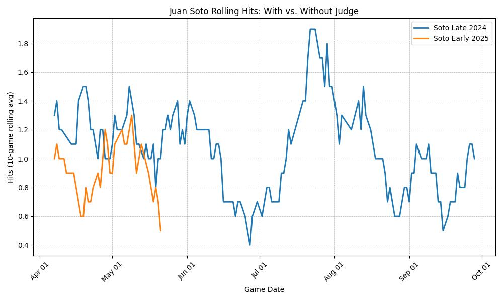

In late 2024, Juan Soto hit in front of Aaron Judge in the Yankees lineup. Protected by Judge, Soto saw strikes, drove pitches, and surged. But in early 2025, Soto signed with the Mets. Judge stayed.
The shift wasn’t injury or slump—it was architecture. Soto lost the one thing pitchers feared more than him: Judge.
This chart compares Soto’s 10-game rolling hit average in late 2024 (with Judge) and early 2025 (without Judge behind him in the lineup).
Figure: Juan Soto’s rolling hits per game. Blue = Yankees (with Judge). Orange = Mets (no Judge).
Pitchers attacked Soto differently depending on who loomed behind him. With Judge on deck, they couldn’t afford to walk Soto. Without Judge, they could.
The result wasn’t subtle. The blue curve climbs; the orange collapses. It’s the same hitter—just a different lineup.
This is the Soto–Judge Effect. It's not about decline. It's about displacement. Soto didn’t lose form—he lost formation.